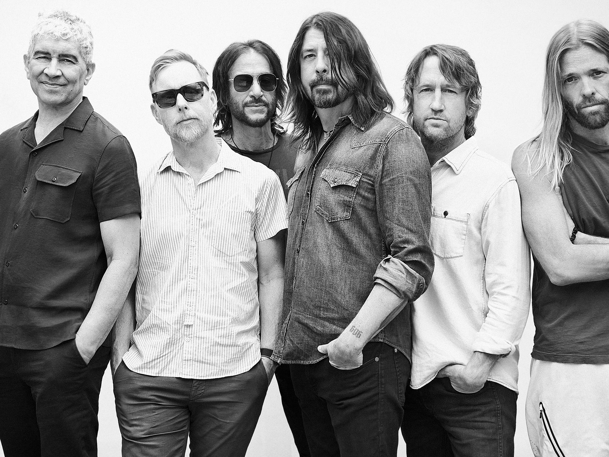

Melding heavy rock guitars, driving punk sensibilities, and pretty melodies, Foo Fighters rose to become one of the biggest acts to emerge out of the alt-rock boom of the 1990s. Led by singer Dave Grohl, the former powerhouse drummer for Nirvana, Foo Fighters initially debuted as a solo project in 1995. However, as their lineup expanded, they steadily racked up success after success, filling stadiums around the world while staying near the top of the charts with hits like "My Hero" and "Everlong" off 1997's The Colour and the Shape. Once the band's lineup coalesced around the time of its third album, 1999's There Is Nothing Left to Lose, Foo Fighters' sound also gelled into a recognizable signature built upon the heavy, yet melodic, loud-quiet-loud template of the Pixies and Nirvana; a modern rock sound anchored by Grohl's love of classic guitar rock. It was commercial without pandering and creatively restless without being alienating, a sound with wide appeal delivered by a band that was happy to tour and record the way bands did back in the '70s. Accolades followed, including winning Grammy Awards for 1999's There Is Nothing Left to Lose, 2002's One by One, and 2007's Echoes, Silence, Patience & Grace, all of which also charted in the Top Three of the Billboard 200. When Wasting Light became their first number one album in America upon its release in the spring of 2011, it was confirmation that Foo Fighters were survivors who had earned a large, devoted audience primarily through hard work. Along with their dedication to touring and their continued chart dominance, Foo Fighters have experimented with their sound, drawing inspiration from the rock traditions of iconic cities across America on 2014's Sonic Highways, delving into prog rock on 2017's Concrete and Gold, and embracing danceable, feel-good anthems on 2021's Medicine at Midnight.
All of this industriousness stems from Dave Grohl, who had been playing guitar and writing songs long before he began drumming. Throughout his early teens he performed in a variety of hardcore punk bands and in the late '80s he joined the Washington, D.C.-area hardcore band Scream as their drummer. During Scream's final days, Grohl began recording his own material in the basement studio of his friend Barrett Jones. Some of Grohl's songs appeared on Scream's final album, Fumble. After the band's 1990 summer tour, Grohl joined Nirvana and moved cross-country to Seattle.
Nevermind
After Nirvana recorded Nevermind, Grohl went back to the D.C. area and recorded a handful of tracks that would appear on Pocketwatch, a cassette released by Simple Machines. For most of 1992, he was busy with Nirvana, but when the band was off the road, he recorded solo material with Jones, who had also moved to Seattle. The pair kept recording throughout early 1993, when Grohl returned to Nirvana to record In Utero. He had toyed with the idea of releasing another independent cassette in the summer of 1993, but the plans never reached fruition. Following Kurt Cobain's suicide in 1994, the drummer kept quiet for several months. In the fall of 1994, Grohl and Jones decamped to a professional studio, where in the space of a week, recorded the songs that comprised Foo Fighters' debut album. Boiling down his backlog of songs to about 15 tracks, Grohl played all of the instruments on the album. He made 100 copies of the tape, passing it out to friends and associates. In no time, Grohl's solo project became the object of a fierce record company bidding war.
Instead of embarking on a full-fledged solo career, Grohl decided to form a band. Through his wife he met Nate Mendel, the bassist for Sunny Day Real Estate. Shortly before the pair met, Jeremy Enigk, the leader of Sunny Day Real Estate, had converted to Christianity and quit the band, effectively ending the group's career. Not only did Mendel join Grohl's band, but so did Sunny Day's drummer, William Goldsmith. Former Germs and Nirvana guitarist Pat Smear rounded out the lineup. The band, named Foo Fighters after a World War II secret force that allegedly researched UFOs, signed a contract with Capitol Records. The band's self-titled debut, consisting solely of Dave Grohl's solo recordings, was released on July 4, 1995. It became an instant success in America, as "This Is a Call" garnered heavy alternative and album rock airplay. By early 1996, the album was certified platinum in the U.S.
Throughout 1996, Foo Fighters supported the album with an extensive tour, enjoying a crossover hit with "Big Me" that spring. Late in the year, the group began recording its second album with producer Gil Norton. During the sessions, William Goldsmith left the band due to creative tensions, leaving Grohl to drum on the majority of the album. Before the record's release, Goldsmith was replaced by Taylor Hawkins, who had previously drummed with Alanis Morissette. The Colour and the Shape, Foo Fighters' second album and the first they recorded as a band, was issued in May of 1997. Smear left the group in the wake of the album's completion and was replaced by guitarist Franz Stahl, whose stay proved short-lived; 1999's There Is Nothing Left to Lose was recorded as a three-piece, with ex-No Use for a Name guitarist Chris Shiflett signing on soon after.
In Your Honor
One by One, the group's most polished production, appeared in late 2002, followed by 2005's In Your Honor, which narrowly missed the top of Billboard's album chart. After releasing a live album titled Skin and Bones in 2006, the band returned to Norton's studio and started constructing a dozen fractured, eclectic rock songs to be released in 2007 under the name Echoes, Silence, Patience, and Grace. Two years later, the group released its first compilation, Greatest Hits, as Grohl launched his new supergroup Them Crooked Vultures, which also featured Josh Homme of Queens of the Stone Age and Led Zeppelin's John Paul Jones. Foo Fighters reconvened for 2011's Wasting Light, a Butch Vig production that doubled as the official return of Pat Smear, who hadn't played on any of the band's albums since 1997. Wasting Light wound up as a smash success for the Foos, debuting at number one on the Billboard charts, going gold in the U.S. and garnering the band another four Grammy Awards. In the wake of Wasting Light, several other Foo projects emerged -- a limited-edition compilation of covers called Medium Rare released for Record Store Day 2011; a documentary of the band called Back and Forth -- and the group toured the album into 2012.
...Like Clockwork
In 2012, Foo Fighters announced they were taking a hiatus and Dave Grohl immediately returned to the confines of Queens of the Stone Age, drumming on their 2013 album, ...Like Clockwork. He also threw himself into directing a documentary about the legendary Los Angeles recording studio Sound City. The film appeared early in 2013 to positive reviews, and it was accompanied by a soundtrack called Sound City: Reel to Real, which featured Grohl-directed jams including a variety of Sound City veterans, plus Paul McCartney. Not long after its release, Foo Fighters announced that their hiatus had ended and they were working on a new album. Sonic Highways, released late in 2014, was their most ambitious project yet; each track was recorded in a different city, some with special featured guests, a process documented on an eight-episode documentary series for HBO. Sonic Highways saw international release in early November 2014. During the Sonic Highways world tour, the Foos had the honor of being the final band to perform on The Late Show with David Letterman on May 24, 2015. Soon after, as touring resumed, Grohl fell from the stage during a stop in Sweden, breaking his leg. He performed from a throne for the remainder of the tour, which was rechristened the "Broken Leg Tour."
Saint Cecilia EP
In late 2015, both as a gesture of appreciation to fans and a tribute to the victims of the Paris terror attacks, Foo Fighters released the Saint Cecilia EP, a five-song blast that featured Gary Clark, Jr. and Ben Kweller. It returned the band to the Billboard charts, peaking in the Top 20 on the Hard Rock, Alternative, Tastemaker, and Vinyl charts. Soon after, the band announced an indefinite hiatus and would not release new music until two years later, when they returned with the single "Run." This was the first taste of their ninth album, Concrete and Gold, which appeared in September 2017. Produced by Greg Kurstin, the album found Grohl incorporating some prog rock influences into the group's sound. It also featured a handful of unexpected guest performers, including Paul McCartney, who played drums on a track, saxophonist Dave Koz, Boyz II Men's Shawn Stockman, and the Kills' Alison Mosshart; the latter two both added backing vocals. Along with topping the rock charts, the album was also the group's second to debut at number one on the Billboard 200.
Foo Fighters toured extensively throughout 2017 and 2018, including making an appearance at the Glastonbury Festival. By 2019 they were back at work in the studio, recording in an historic house in Encino, California and again working with producer Kurstin. Initially scheduled for release in 2020, Medicine at Midnight was delayed due to the COVID-19 pandemic. However, a lead single, "Shame Shame," did appear in November 2020, topping the mainstream rock chart. Two more songs followed, including "No Son of Mine" and "Waiting on a War," paving the way for the album, which ultimately arrived in February 2021.Source: www.allmusic.com
